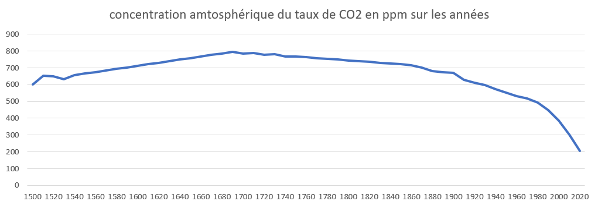

717 chercheurs spécialisés dans le fact checking d’informations sur le réchauffement climatique ont fait la découverte de l’année. Après plusieurs années de recherches, d’études et d'expériences, ils sortent au grand jour du vendredi 2 septembre à 12h58 une vérité que le gouvernement semblait vouloir garder enfouie.
Le gouvernement et les “megacorporations” comme les anglophones les appelleraient, essayent de nous le cacher depuis bien trop longtemps, mais grâce au CSL (Conseil Scientifique Libre) les consciences vont se réveiller. Effectivement, depuis le début, le gouvernement nous parle du réchauffement climatique et à quel point c’est dramatique, dangereux, et un problème pour la faune et la flore. Ne sachant pas que le CSL travaillait sur des études top secrètes menées par des professionnels de renoms à travers tous les pays, et certains de prestigieux établissements comme le MIT, de ShinXangFù ou encore d’une seconde d’un petit lycée agricole de campagne.
"Le bon côté, témoigne Carl Maks, proche collaborateur de l'université internationale de Poitiers, c'est que la vérité va être dévoilée et que les tête du grand capital vont finir par tomber."
Depuis quelques jours, la plupart des observateurs exterieurs parlent déjà d'un Nouvel Ordre Mondial, ce qui n'est pas sans rappeler les plus sombres heures de notre histoire.

Une vérité exposée, un avenir incertain
Depuis plusieurs décennies, le gouvernement et les grosses entreprises rabâchent que le réchauffement climatique est dû à cause de l’activité humaine, principalement à l’industrialisation et de la combustion des énergies fossiles qui rejettent du dioxyde carbone. Mais le CSL, depuis plus de 500 ans réalise des relevées atmosphériques pour savoir précisément le taux de la concentration atmosphérique du CO2
Le gouvernement taxe les entreprises qui “produisent” des émissions de CO2 afin de s’enrichir et de remplir les caisses de l'État qui sont plutôt vides vu la dette nationale. Depuis plusieurs décennies, ils fonctionnent en secret avec les plus grandes entreprises pour du climat afin de tromper la population et la laisser avec l’idée que les humains détruisent la planète et pour nous diviser afin de mieux régner sur le monde.
Les débats climatiques sont tous organisés de toute pièce depuis le début par les géants de ce monde pour entretenir et alimenter ce mensonge qui est devenue une véritable industrie au jour d'aujourd'hui qui génère plusieurs millions d’euros et de dollars. Plusieurs personnes sont déjà suspectées et vont être mises en examen dans les prochains jours, des personnalités tel que l’inspecteur gadget, Dora l’exploratrice ou encore Gripsou.
Premièrement, le nombre d’ours polaire augmente, c’est donc un gros mensonge de l'État et des scientifiques pour nous sensibiliser et nous rendre empathique et nous forcer à protéger la banquise qui se porte parfaitement bien depuis ces 500 dernières années, comme nos scientifiques du CSL le prouvent. Certains soupçonnent qu’un nouveau pays est en fait en cours de construction sur les banquises, dans le plus grand des secrets, pour pouvoir réaliser des expériences sur le monde à l’aide de gaz car, oui, il n’y a pas de vent sur les pôles ou sur les banquises, ils y seraient donc à l’abri.
Deuxièmement, s’il fait, soit-disant, plus chaud, comme le gouvernement et les plus grandes enseignes scientifiques nous le disent depuis plusieurs années, pourquoi est-ce qu’il pleut toujours autant ? Si il fait plus chaud, il devrait faire l’été tout le temps, et non froid en hiver. De plus, les banquises devraient fondre, ce qui devrait tuer les ours polaires or, comme prouvé, il y en a de plus en plus. Raoults Absd-Shalego “Les preuves sont devant nos yeux depuis le début, pourquoi fait-il toujours aussi froid en Hiver ? Pourquoi le ski reste encore un moyen économique pour la France et une force touristique sans précédent pour la France ? car le gouvernement veut nous faire penser que ça ne durera pas longtemps pour justement créer l’envie d’y aller encore une fois.”
Voir les contributions